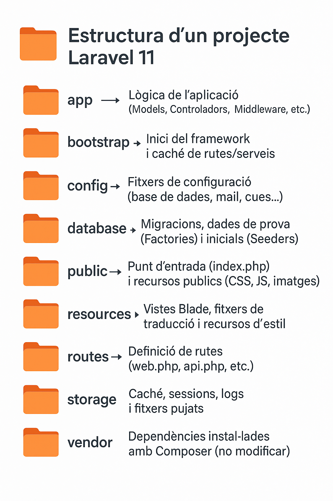

SA3. Arquitectura MVC amb Laravel¶
Duració i criteris d'evaluació
Duració estimada: 18 hores
| Resultat d'aprenentatge | Criteris d'avaluació |
|---|---|
| 5. Desenvolupa aplicacions Web identificant i aplicant mecanismes per a separar el codi de presentació de la lògica de negoci. | a) S'han identificat els avantatges de separar la lògica de negoci dels aspectes de presentació de l'aplicació. b) S'han analitzat i utilitzat mecanismes i frameworks que permeten realitzar aquesta separació i les seues caracterÃstiques principals. c) S'han utilitzat objectes i controls en el servidor per a generar l'aspecte visual de l'aplicació web en el client. d) S'han utilitzat formularis generats de manera dinà mica per a respondre als esdeveniments de l'aplicació web. e) S'han identificat i aplicat els parà metres relatius a la configuració de l'aplicació web. f) S'han escrit aplicacions web amb manteniment d'estat i separació de la lògica de negoci. g) S'han aplicat els principis i patrons de disseny de la programació orientada a objectes. h) S'ha provat i documentat el codi. |
SA 3.1 MVC i instal·lació de Laravel¶
🧩 Avantatges de la separació de capes¶
🔠Què és la separació de responsabilitats?¶
En el desenvolupament d’aplicacions web, separar la lògica de negoci (com es processen les dades) de la presentació (com es mostren) és essencial per crear projectes escalables i fà cils de mantindre.
Problemes quan no hi ha separació¶
- Codi desordenat i difÃcil de llegir.
- Modificar la interfÃcie pot trencar la lògica i viceversa.
- Dificultat per treballar en equip.
Beneficis¶
| Avantatge | Descripció |
|---|---|
| Mantenibilitat | És més fà cil modificar el codi, ja que cada part està separada. |
| Reutilització | El codi es pot reutilitzar en diferents parts del projecte. |
| Escalabilitat | És més senzill afegir noves funcionalitats sense trencar les existents. |
| Treball en equip | Permet dividir tasques entre programadors backend i frontend. |
| Testabilitat | Podem fer proves unità ries de la lògica sense necessitat de la interfÃcie. |
| Seguretat | Mantindre la lògica separada ajuda a controlar millor les entrades i sortides. |
Comparació¶
- Aplicació monolÃtica: tot el codi barrejat (HTML, SQL, lògica PHP).
- MVC: cada capa té la seua responsabilitat i només interactua amb les necessà ries.
💡 Exemple senzill¶
Sense separació:
<?php
// Exemple dolent: lògica i presentació mesclades
$conn = new PDO('mysql:host=localhost;dbname=test', 'root', '');
$sql = "SELECT * FROM usuaris";
$result = $conn->query($sql);
echo "<ul>";
foreach ($result as $usuari) {
echo "<li>" . $usuari['nom'] . "</li>";
}
echo "</ul>";
```
Amb separació:
```php
// Controlador (lògica)
$usuaris = Usuari::tots();
// Vista (presentació - Blade)
<ul>
@foreach ($usuaris as $usuari)
<li>{{ $usuari->nom }}</li>
@endforeach
</ul>
Avantatges de la separació¶
| Avantatge | Descripció |
|---|---|
| Mantenibilitat | És més fà cil modificar el codi, ja que cada part està separada. |
| Reutilització | El codi es pot reutilitzar en diferents parts del projecte. |
| Escalabilitat | És més senzill afegir noves funcionalitats sense trencar les existents. |
| Treball en equip | Permet dividir tasques entre programadors backend i frontend. |
| Testabilitat | Podem fer proves unità ries de la lògica sense necessitat de la interfÃcie. |
| Seguretat | Mantindre la lògica separada ajuda a controlar millor les entrades i sortides. |
En resum, separar la lògica de negoci dels aspectes de presentació és una bona prà ctica fonamental per desenvolupar aplicacions web robustes, escalables i fà cils de mantindre. Aquesta separació s’aplica de forma natural amb frameworks com Laravel, que segueixen el patró MVC (Model-Vista-Controlador).
🔧 Frameworks i mecanismes de separació¶
Un framework és un conjunt d'eines i biblioteques que facilita el desenvolupament d'aplicacions seguint una estructura predefinida i bones prà ctiques.
CaracterÃstiques generals:¶
- Facilita la separació de responsabilitats (MVC).
- Redueix el temps de desenvolupament.
- Estableix un patró coherent i mantenible.
- Incorpora sistemes de seguretat, validació, rutes i molt més.
🧱 Patró MVC (Model – Vista – Controlador)¶
El patró MVC és un patró de disseny que separa clarament tres responsabilitats:
| Component | Funció principal |
|---|---|
| Model | Gestiona les dades i la lògica de negoci. |
| Vista | Mostra la informació a l’usuari. |
| Controlador | Gestiona les peticions i coordina el Model i la Vista. |

🚀 Laravel com a framework MVC¶
Laravel és un framework PHP modern que aplica de manera nativa el patró MVC.
app/
├── Http/
│ └── Controllers/ → Controladors (C)
├── Models/ → Models (M)
resources/
└── views/ → Vistes Blade (V)
└── routes/ → Rutes (R)
🧪 Exemple bà sic¶
Ruta:
Route::get('/usuaris', [UsuariController::class, 'index']);
Controlador:
class UsuariController extends Controller {
public function index() {
$usuaris = Usuari::all();
return view('usuaris.index', compact('usuaris'));
}
}
class Usuari extends Model {
protected $table = 'usuaris';
}
<ul>
@foreach($usuaris as $usuari)
<li>{{ $usuari->nom }}</li>
@endforeach
</ul>
📦 Instal·lació de Laravel¶
🔧 Crear una aplicació Laravel amb Docker (Sail)¶
Si estàs desenvolupant en Linux i ja tens Docker Compose instal·lat, pots crear una aplicació Laravel nova amb una simple comanda de term
1️⃣ Preparació (només si utilitzes Docker Desktop per a Linux)
Si estàs utilitzant Docker Desktop per a Linux, executa aquesta comanda:
docker context use default
2️⃣ Crear el projecte
Executa aquesta comanda per crear una nova aplicació Laravel en una carpeta anomenada example-app
curl -s https://laravel.build/example-app | bash
Per descomptat, podeu canviar "exemple-app" en aquest URL a qualsevol cosa que vulgueu - només assegureu-vos que el nom de l'aplicació només conté carà cters alfanumèrics, guions i guions baixos. El directori de l'aplicació Laravel es crearà dins del directori des del qual executeu l'ordre.
3️⃣ Iniciar Laravel Sail
Ara podeu navegar al directori de l'aplicació i iniciar Laravel Sail. Laravel Sail proporciona una interfÃcie senzilla de lÃnia d'ordres per a interactuar amb la configuració predeterminada de l'acoblador Laravel:
cd exemple-app && ./vendor/bin/sail up &
4️⃣ Executar les migracions
Una vegada arrancats els contenidors, pots aplicar les migracions:
./vendor/bin/sail artisan migrate
Ara pots obrir l’aplicació en el navegador en http://localhost.
Estructura de carpetes simplificada¶

⚙️ Configuració bà sica en Laravel¶
Laravel gestiona la configuració en el fitxer .env i en fitxers del directori config/.
.env → Conté les variables de configuració de l’entorn (nom de l’app, base de dades, correu…).
config/ → Conté fitxers PHP amb configuracions globals (app.php, database.php, etc.).
📌 Exemple .env mÃnim:
APP_NAME="LaravelApp"
APP_ENV=local
APP_DEBUG=true
DB_CONNECTION=mysql
DB_HOST=127.0.0.1
DB_DATABASE=laravel
DB_USERNAME=root
DB_PASSWORD=
php artisan list # totes les comandes
php artisan route:list # rutes registrades
php artisan make:model Nom -m # model + migració
php artisan migrate # aplicar migracions
Bones prà ctiques
Mai posar secrets al codi; usa .env i variables d’entorn. Revisa APP_ENV, APP_DEBUG, APP_URL, timezone, locale.
SA 3.2 CRUD bà sic en Laravel¶

🛣️ Rutes¶
Les rutes web viuen a routes/web.php. Importa les classes amb use.
Simple
use Illuminate\Support\Facades\Route;
Route::get('/salut', fn() => 'Hola món!');
```
**Amb Parà metres (i opcionals)**
```php
Route::get('/salut/{nom}', fn(string $nom) => "Bon dia, $nom");
Route::get('/salut/{nom?}', fn(?string $nom = 'Convidat') => "Bon dia, $nom");
Amb Validació bà sica (regex helpers)
Route::get('/producte/{id}', fn(int $id) => "Producte ID: $id")->whereNumber('id');
Amb Route Model Binding (recomanat)
use App\Models\Producte;
Route::get('/productes/{producte}', fn(Producte $producte) => $producte->nom);
Amb nom
Route::get('/contacte', fn() => 'PÃ gina de contacte')->name('contacte');
// Blade: <a href="{{ route('contacte') }}">Contacte</a>
Grups (prefix + middleware)
Route::prefix('admin')->middleware('auth')->group(function () {
Route::get('/dashboard', fn() => 'Admin Dashboard');
Route::get('/usuaris', fn() => 'Admin Usuaris');
});
Controladors i recursos
use App\Http\Controllers\UsuariController;
use App\Http\Controllers\ArticleController;
Route::get('/usuari/{id}', [UsuariController::class, 'mostrar']);
Route::resource('articles', ArticleController::class);
// variants:
Route::resource('articles', ArticleController::class)->only(['index','show']);
🪟 Vistes i Blade (essencial)¶
Vistes en resources/views. No hi posem lògica de negoci.
Mostrar vista i passar dades
Route::get('/', fn() => view('welcome'));
Route::get('/inici', function () {
$nom = 'Nacho';
return view('inici', compact('nom')); // o ['nom'=>$nom] o ->with('nom',$nom)
});
resources/views/inici.blade.php
Benvingut/da, {{ $nom }}
🗡️ Sintaxi Blade bà sica¶
{{-- Comentari Blade --}}
Hola, {{ $nom }} {{-- escapada (segura) --}}
{!! $html !!} {{-- sense escapar (atenció XSS) --}}
@if($condicio) ... @elseif($altra) ... @else ... @endif
@foreach($items as $it) {{ $it }} @endforeach
@forelse($items as $it) {{ $it }} @empty Sense items @endforelse
📰 Layouts (herència)¶
resources/views/layouts/app.blade.php
<!doctype html>
<html>
<head>
<title>@yield('title', config('app.name'))</title>
@vite(['resources/css/app.css','resources/js/app.js'])
</head>
<body>
@include('partials.nav')
<main>@yield('content')</main>
</body>
</html>
@extends('layouts.app')
@section('title','Inici')
@section('content')
<h1>Benvingut/da!</h1>
@endsection
🧩 Components Blade¶
Els Components Blade permeten definir elements reutilitzables:
1️⃣ Crear component:
php artisan make:component Alert
2️⃣ Definir la lògica:
class Alert extends Component {
public $type;
public function __construct($type) {
$this->type = $type;
}
public function render() {
return view('components.alert');
}
}
3️⃣ Vista del component:
{{ $slot }}
4️⃣ Utilitzar-lo en una vista:
<x-alert >Missatge Enviat!</x-alert>
⚙️ Controladors (organitzar la lògica)¶
Crear controlador
php artisan make:controller PruebaController
Controlador de recursos (CRUD)
```bash php artisan make:controller ProducteController --resource
Rutes:
```php
use App\Http\Controllers\ProducteController;
Route::resource('productes', ProducteController::class);
🦴🏗️Esquelet tÃpic (amb validació i binding)¶
use App\Models\Producte;
use Illuminate\Http\Request;
class ProducteController extends Controller
{
public function index() {
$productes = Producte::latest()->get();
return view('productes.index', compact('productes'));
}
public function create() {
return view('productes.create');
}
public function store(Request $request) {
$validated = $request->validate([
'nom' => 'required|string|max:255',
'preu' => 'required|numeric|min:0',
]);
Producte::create($validated);
return redirect()->route('productes.index')->with('ok','Creat!');
}
public function edit(Producte $producte) {
return view('productes.edit', compact('producte'));
}
public function update(Request $request, Producte $producte) {
$validated = $request->validate([
'nom' => 'required|string|max:255',
'preu' => 'required|numeric|min:0',
]);
$producte->update($validated);
return redirect()->route('productes.index')->with('ok','Actualitzat!');
}
public function destroy(Producte $producte) {
$producte->delete();
return redirect()->route('productes.index')->with('ok','Esborrat!');
}
}
📋 Formularis dinà mics, POST i validació¶
Vistes per al CRUD resources/views/productes/index.blade.php
<h1>Productes</h1>
@if(session('ok'))
<div class="alert alert-success">{{ session('ok') }}</div>
@endif
<a href="{{ route('productes.create') }}">Nou producte</a>
<ul>
@forelse($productes as $p)
<li>
{{ $p->nom }} — {{ $p->preu }} €
<a href="{{ route('productes.edit', $p) }}">Editar</a>
<form action="{{ route('productes.destroy', $p) }}" method="POST" style="display:inline">
@csrf @method('DELETE')
<button type="submit">Esborrar</button>
</form>
</li>
@empty
<li>No hi ha productes</li>
@endforelse
</ul>
<h1>Nou producte</h1>
<form method="POST" action="{{ route('productes.store') }}">
@csrf
<label>Nom</label>
<input name="nom" value="{{ old('nom') }}">
@error('nom') <small>{{ $message }}</small> @enderror
<label>Preu</label>
<input name="preu" value="{{ old('preu') }}">
@error('preu') <small>{{ $message }}</small> @enderror
<button type="submit">Guardar</button>
</form>
resources/views/productes/edit.blade.php
<h1>Editar producte</h1>
<form method="POST" action="{{ route('productes.update', $producte) }}">
@csrf @method('PUT')
<label>Nom</label>
<input name="nom" value="{{ old('nom', $producte->nom) }}">
@error('nom') <small>{{ $message }}</small> @enderror
<label>Preu</label>
<input name="preu" value="{{ old('preu', $producte->preu) }}">
@error('preu') <small>{{ $message }}</small> @enderror
<button type="submit">Actualitzar</button>
</form>
🗄️ Model Eloquent¶
app/Models/Producte.php
namespace App\Models;
use Illuminate\Database\Eloquent\Model;
class Producte extends Model
{
protected $fillable = ['nom','preu'];
}
🏗️ Migració¶
Schema::create('productes', function (Blueprint $table) {
$table->id();
$table->string('nom');
$table->decimal('preu', 8, 2);
$table->timestamps();
});
⚡ Recursos del client amb Vite¶
Instal·lar dependències frontend
npm install
Config per defecte (resum) vite.config.js
import { defineConfig } from 'vite';
import laravel from 'laravel-vite-plugin';
export default defineConfig({
plugins: [laravel(['resources/css/app.css','resources/js/app.js'])],
});
Carregar a layout Blade
@vite(['resources/css/app.css','resources/js/app.js'])
Executar
npm run dev # HMR
npm run build # producció
SA3.3 Formularis dinà mics i manteniment d’estat¶
En Laravel, els formularis es creen amb Blade i s’envien als controladors. La validació i el manteniment d’estat (sessions, old()) són clau per a una bona UX (User Experience).
📋 Formularis amb Blade¶
- Sempre inclou
@csrfper protegir contra CSRF. - Per a PUT/PATCH/DELETE, usa
@method('PUT'), etc.
{{-- resources/views/productes/create.blade.php --}}
<h1>Nou producte</h1>
<form method="POST" action="{{ route('productes.store') }}">
@csrf
<label>Nom</label>
<input name="nom" value="{{ old('nom') }}">
@error('nom') <small class="error">{{ $message }}</small> @enderror
<label>Preu</label>
<input name="preu" value="{{ old('preu') }}">
@error('preu') <small class="error">{{ $message }}</small> @enderror
<label>Categoria</label>
<select name="categoria">
<option value="">-- Selecciona --</option>
<option value="hardware" @selected(old('categoria')==='hardware')>Hardware</option>
<option value="software" @selected(old('categoria')==='software')>Software</option>
</select>
<label>
<input type="checkbox" name="actiu" value="1" @checked(old('actiu'))>
Actiu
</label>
<button type="submit">Guardar</button>
</form>
Mantenir valors
old('camp') manté el valor introduït si la validació falla.
⏱️ Validació al controlador (rà pida)¶
public function store(\Illuminate\Http\Request $request)
{
$validated = $request->validate([
'nom' => ['required','string','max:255'],
'preu' => ['required','numeric','min:0'],
'categoria' => ['nullable','in:hardware,software'],
'actiu' => ['nullable','boolean'],
]);
$validated['actiu'] = (bool)($validated['actiu'] ?? false);
\App\Models\Producte::create($validated);
return redirect()
->route('productes.index')
->with('ok','Producte creat correctament'); // flash message (sessió)
}
Missatges d’error a la vista: @error('camp') ... @enderror i {{ $message }}.
✅📄 Validació amb Form Request (recomanat)¶
php artisan make:request StoreProducteRequest
// app/Http/Requests/StoreProducteRequest.php
class StoreProducteRequest extends FormRequest {
public function authorize(): bool
{
return true;
}
public function rules(): array {
return [
'nom' => ['required','string','max:255'],
'preu' => ['required','numeric','min:0'],
'categoria' => ['nullable','in:hardware,software'],
'actiu' => ['nullable','boolean'],
];
}
}
public function store(\App\Http\Requests\StoreProducteRequest $request)
{
\App\Models\Producte::create($request->validated());
return redirect()->route('productes.index')->with('ok','Creat!');
}
🔑 Manteniment de l'estat amb sessions¶
// Escriure en sessió
session(['tema' => 'fosc']);
// Llegir amb valor per defecte
$tema = session('tema', 'clar');
// Flash (1 petició)
return back()->with('ok', 'Acció completada');
blade
@if(session('ok'))
<div class="alert alert-success">{{ session('ok') }}</div>
@endif
🔄📋 Formularis que responen a l'estat¶
{{-- canvia el text del botó segons si l’usuari està logat --}}
<button>
{{ auth()->check() ? 'Comprar ara' : 'Inicia sessió per comprar' }}
</button>
SA3.4 Introducció a PHPDoc en Laravel¶
PHPDoc és un està ndard de documentació per a codi PHP que utilitza comentaris especials per descriure mètodes, classes, propietats i constants.
En Laravel, ajuda a: - Entendre més rà pid el codi. - Millorar l’autocompletat a l’IDE (VS Code, PhpStorm…). - Generar documentació automà tica. - Evitar errors per mal ús de mètodes i dades.
📠Sintaxi bà sica¶
Un comentari PHPDoc comença amb /* i acaba amb /. Dins, utilitzem etiquetes per descriure elements.
/**
* Descripció breu del que fa el mètode.
*
* Descripció més detallada (opcional).
*
* @param Tipus $nomParam Descripció del parà metre
* @return TipusRetorn Descripció del retorn
*/
📌 Exemple en un controlador de Laravel
/**
* Mostra el llistat de productes.
*
* @return \Illuminate\View\View
*/
public function index()
{
$productes = Producte::all();
return view('productes.index', compact('productes'));
}
/**
* Guarda un nou producte a la base de dades.
*
* @param \Illuminate\Http\Request $request
* @return \Illuminate\Http\RedirectResponse
*/
public function store(Request $request)
{
$validated = $request->validate([
'nom' => 'required|string|max:255',
'preu' => 'required|numeric|min:0',
]);
Producte::create($validated);
return redirect()->route('productes.index')->with('success', 'Producte creat correctament.');
}
🔖 Etiquetes més habituals¶
Etiqueta Significat
@param Tipus i nom de cada parà metre que rep el mètode.
@return Tipus del valor retornat.
@var Tipus d’una variable o propietat.
@throws Tipus d’excepció que pot llençar-se.
@property Propietats “mà giques†d’una classe (per Eloquent).
@method Mètodes “mà gics†que no estan explÃcits al codi.
📚 PHPDoc en models Eloquent¶
Quan Laravel crea models, moltes propietats i mètodes no apareixen al codi, però hi són grà cies a Eloquent. Podem documentar-los aixÃ:
/**
* App\Models\Producte
*
* @property int $id
* @property string $nom
* @property float $preu
* @method static \Illuminate\Database\Eloquent\Builder|Producte whereNom($value)
*/
class Producte extends Model
{
protected $fillable = ['nom', 'preu'];
}
💡 Bones prà ctiques¶
- Documenta tots els mètodes públics.
- Usa tipus complets (no array, sinó string[] o int[] quan siga possible).
- Actualitza PHPDoc quan canvies la signatura d’un mètode.
- No sobrecarregues amb informació obvia; sigues clar i útil.
🧩 Seqüència de reptes¶
🧱 R1. Endreça el caos — Instal·la Laravel i aplica MVC bà sic¶
Duració: 1 sessió (3 h)
🧩 Plantejament¶
Un antic projecte PHP del client està tot en un sol fitxer ple d’echo i if.
T’han demanat “posar-ho bonic†amb Laravel i aplicar bones prà ctiques.
📋 Tasques¶
- Instal·la Laravel.
- Prova que funcione la ruta
/mostrant una vista Blade amb un text. - Crea un controlador
WelcomeControlleramb un mètodeindex(). - Passa dades des del controlador a la vista (
compact()). - Mostra la informació en una vista
welcome.blade.phpamb Blade ({{ $variable }}).
🧾 Evidències esperades¶
- Projecte Laravel funcionant localment.
- Controlador, ruta i vista correctament connectats.
- Vista amb dades dinà miques.
🧠Explicació prèvia docent¶
- Què és Laravel i com s’instal·la.
- Flux Request → Route → Controller → View.
- Passar dades amb
compact()owith(). - Sintaxi bà sica Blade (
{{ }},@if,@foreach).
🧱 R2. El catà leg dinà mic — Models sense base de dades¶
Duració: 1 sessió (3 h)
🧩 Plantejament¶
Una empresa et demana una web de catà leg (llibres, pel·lÃcules o equips).
De moment no hi ha base de dades, però cal mostrar una llista i un detall.
📋 Tasques¶
- Crea un model (per exemple
Producte.php) amb un array intern de dades. - Afegeix mètodes com
all()ifind($id). - Crea un controlador
ProducteControllerambindex()ishow($id). - Defineix rutes
/productesi/productes/{id}. - Mostra la llista i la fitxa amb vistes Blade.
🧾 Evidències esperades¶
- Model funcional amb array d’objectes.
- Controlador amb dos mètodes ben diferenciats.
- Vistes que reben i mostren dades reals.
🧠Explicació prèvia docent¶
- Models sense Eloquent: classes PHP normals.
- Rutes amb parà metres (
Route::get('/productes/{id}')). - Passar dades amb
compact(). - Organització de carpetes (
app/Models,app/Http/Controllers,resources/views).
🧱 R3. Reutilitza i dissenya — Plantilles i components Blade¶
Duració: 1 sessió (3 h)
🯠Objectiu¶
Aprendre a reutilitzar codi de vistes amb plantilles, seccions i components Blade.
🧩 Plantejament¶
El client vol que totes les pà gines tinguen el mateix estil i menú.
T’has d’encarregar de crear una plantilla comuna per a tota la web.
📋 Tasques¶
- Crea un
layouts/app.blade.phpamb@yield('content'). - Modifica les vistes per
@extends('layouts.app')i@section('content'). - Crea un
partials/menu.blade.phpi inclou-lo amb@include. - Afig un estil coherent (Tailwind o CSS senzill).
- (Opcional) Crea un component Blade
<x-targeta>.
🧾 Evidències esperades¶
- Layout principal operatiu.
- Vistes hereten i mostren contingut coherent.
- Components o
@includeutilitzats correctament.
🧠Explicació prèvia docent¶
- Blade inheritance:
@extends,@yield,@section. @includei components Blade.- Bones prà ctiques de modularitat i DRY.
🧱 R4. Interacciona amb l’usuari — Formularis i validació¶
Duració: 1–1,5 sessions (3–4,5 h)
🯠Objectiu¶
Aprendre a gestionar rutes POST, formularis i validació bà sica.
🧩 Plantejament¶
El client vol un formulari de contacte o per a afegir un comentari, encara que no s’arxive.
Només cal mostrar un missatge de confirmació amb les dades rebudes.
📋 Tasques¶
- Crea una ruta
GET /contacteiPOST /contacte. - Implementa un formulari Blade amb
@csrf. - Valida les dades amb
$request->validate(). - Mostra errors amb
@errori valors antics ambold(). - Redirigeix amb
redirect()->with('success', 'Missatge rebut!').
🧾 Evidències esperades¶
- Formulari funcional.
- Validacions amb missatges.
- Confirmació visual correcta.
🧠Explicació prèvia docent¶
- Rutes
POSTi controladors. - Validació bà sica i missatges d’error.
- Sessió i missatges flash.
Exercicis¶
🧩 Bateria d'Exercicis Solucionats per al CRUD de Laravel : Guia d'Equips de Futbol Femenö
L'objectiu d'aquest exercici és construir una aplicació Laravel per gestionar una guia d'equips de futbol femenÃ. Aprendrem a configurar rutes, controladors, vistes i a passar dades utilitzant les funcionalitats de Laravel.
Arbre del repositori¶
FutbolFemeni/
├─ README.md
├─ routes/
│ └─ web.php
├─ app/
│ └─ Http/
│ └─ Controllers/
│ └─ EquipController.php
├─ resources/
│ ├─ views/
│ │ ├─ layouts/
│ │ │ └─ app.blade.php
│ │ ├─ partials/
│ │ │ └─ menu.blade.php
│ │ ├─ equips/
│ │ │ ├─ index.blade.php
│ │ │ ├─ show.blade.php
│ │ │ └─ create.blade.php
│ │ └─ components/
│ │ └─ equip.blade.php
│ └─ css/
│ └─ equips.css
├─ vite.config.js # afegim equips.css a l’input de Vite
└─ .env.example # opcional
Pas 1: Configurar el projecte¶
- Crea un projecte Laravel anomenat
futbol-femeni:
curl -s "https://laravel.build/futbol-femeni?with=mysql,mailpit" | bash
cd futbol-femeni
./vendor/bin/sail up -d
./vendor/bin/sail artisan migrate
Problemes: des de dins de l'institut no funciona perquè els repositoris estan capats.
Solució:
- Quan falle . Copiar la següent carpeta a la carpeta del projecte.
- Canviar este troç del docker-compose.yml per este:
laravel.test:
build:
context: './vendor/laravel/sail/runtimes/8.3'
laravel.test:
build:
context: './docker'
i despres acabem la instal·lació:
cd futbol-femeni
./vendor/bin/sail up
./vendor/bin/sail artisan migrate
./vendor/bin/sail npm install && npm run build
Navega a http://localhost i a /equips
Pas 2: Crear rutes i controlador¶
Defineix les rutes a routes/web.php
Crea el controlador:
./vendor/bin/sail artisan make:controller EquipController
EquipController.php
Pas 3: Crear les vistes¶
Defineix la plantilla layout\app.blade.php
Crea les vistes:
Defineix el component de la vista per a Equip:
Afegeix els estils:
Configura vite:
- Modifica el fixer
vite.config.js - Executa:
./vendor/bin/sail npm install && npm run build
🯠Projecte "Futbol Femenà I"¶
Objectiu¶
Estendre la mini-app de la Guia d’equips de futbol femenà per afegir:
1) Estadis (llistat + alta),
2) Jugadores (llistat + alta) i
3) Partits (llistat + alta),
aplicant MVC en Laravel, Blade, components, Vite i validació.
Sense base de dades: emmagatzema les dades en sessió.
Requisits previs¶
- Projecte Laravel funcionant.
.envambSESSION_DRIVER=file.resources/views/layouts/app.blade.phpcom a layout comú amb@include('partials.menu').- Vite: un únic
@vite(['resources/css/app.css','resources/js/app.js'])al layout.
Importa els estils propis dinsresources/css/app.css(p. ex.@import './guias.css';).
Dades mÃnimes (per iniciar)¶
- Estadis (mÃnim):
- Estadi Johan Cruyff · Sant Joan Despà · 6000 · FC Barcelona Femenà - Centro Deportivo Wanda Alcalá de Henares · Alcalá de Henares · 2800 · Atlètic de Madrid Femenà - Estadio Alfredo Di Stéfano · Madrid · 6000 · Real Madrid FemenÃ-
Jugadores (mÃnim):
- Alexia Putellas · Barça Femenà · Migcampista
- Esther González · Atlètic de Madrid · Davantera
- Misa RodrÃguez · Real Madrid Femenà · Portera
-
Partits (mÃnim):
-
Local: Barça Femenà · Visitant: Atlètic de Madrid · Data: 2024-11-30 · Resultat: (buit)
- Local: Real Madrid Femenà · Visitant: Barça Femenà · Data: 2024-12-15 · Resultat: 0-3
-
Pots ampliar els arrays, però no uses Eloquent ni migracions.
Fases i tasques¶
Fase 1 — Estadis¶
- Controlador
EstadiController- Mètodes:index,create,store. - Dades inicials: array intern (seed). - Llegir/guardar en sessió a la clauestadis. - Rutes anomenades
-
GET /estadis→estadis.index-GET /estadis/crear→estadis.create-POST /estadis→estadis.store - Vistes Blade
-
estadis/index.blade.php: taula Nom, Ciutat, Capacitat, Equip principal + enllaç “+ Nou estadi”. -estadis/create.blade.php: formulari nom, ciutat, capacitat, equip_principal + botó “Guardar”. - Totes hereten delayouts/appi mostren missatges d’èxit/errades. - Validació obligatòria
-
nom: required, mÃn. 3 -ciutat: required, mÃn. 2 -capacitat: required, integer, mÃn. 0 -equip_principal: required, mÃn. 3 - Component Blade
- Crea un component (ex.
<x-estadi :nom="…"/>) i utilitza’l a la taula.
Fase 2 — Jugadores¶
- Controlador
JugadoraController(index,create,store; sessió claujugadores). - Rutes
-
GET /jugadores→jugadores.index-GET /jugadores/crear→jugadores.create-POST /jugadores→jugadores.store - Vistes
-
jugadores/index.blade.php: taula Nom, Equip, Posició + “+ Nova jugadora”. -jugadores/create.blade.php: formulari nom, equip, posicio (select amb: Portera, Defensa, Migcampista, Davantera). - Validació
-
nom: required, mÃn. 3 -equip: required, mÃn. 2 -posicio: required, in(Portera, Defensa, Migcampista, Davantera) - Component
- Component (ex.
<x-jugadora :nom="…"/>) i ús a la taula.
Fase 3 — Partits¶
- Controlador
PartitController(index,create,store; sessió claupartits). - Rutes
-
GET /partits→partits.index-GET /partits/crear→partits.create-POST /partits→partits.store - Vistes
-
partits/index.blade.php: taula Local, Visitant, Data, Resultat + “+ Nou partit”. -partits/create.blade.php: formulari local, visitant, data (input date), resultat (opcional). - Validació
-
local: required, mÃn. 2 -visitant: required, mÃn. 2, different:local -data: required, formatY-m-d-resultat: nullable, regex^\d+-\d+$(ex.2-1) amb missatge personalitzat. - Component
- Component curt (ex.
<x-equip-mini :nom="…"/>) per al nom d’equip.
Fase 4 — Menú i navegació¶
- Actualitza
resources/views/partials/menu.blade.phpper enllaçar amb rutes anomenades:
equips.index,estadis.index,jugadores.index,partits.index. - Verifica que totes les pà gines hereten del layout i mostren el menú.
Fase 5 — Estils i Vite¶
- Crea/actualitza
resources/css/guias.cssamb estils bà sics de taules, formularis i alertes. - Importa’l dins
resources/css/app.cssamb@import. - Executa Vite (
npm run devonpm run build) i comprova cà rrega d’estils sense errors de manifest.
Criteris d’acceptació (checklist)¶
- Rutes definides i anomenades (no hardcodejar URLs a les vistes).
- Dades en sessió (no BBDD); persistixen mentre el servidor està actiu.
- Formularis amb validació i missatges d’error visibles.
- Missatge d’èxit (flash) després de guardar.
- Vistes que hereten del layout i inclouen el menú.
- Components Blade usats en cada apartat (min. 1 per secció).
- Estils via Vite (un sol
@viteal layout; CSS importat des d’app.css).
Entregables¶
- Enllaç del repositori GitHub amb un
READMEcurt per arrancar el projecte. - Captures o GIF breu mostrant: crear estadi, crear jugadora i crear partit.
- (Opcional) Breu text amb decisions de validació i possibles millores.
| Criteri | Puntuació Total | Complet(2) | Incomplet(1) | Insuficient(0) |
|---|---|---|---|---|
| Inicialització de dades (seed i sessió) | 1 | Arrays inicials creats i carregats en sessió; persistència mentre dura l’execució | Arrays creats però sense cà rrega en sessió o amb claus inconsistents | No hi ha dades inicials ni ús de sessió |
| Rutes anomenades i navegació (menú) | 3 | Totes les rutes definides amb name() i enllaçades des del menú; no hi ha URLs hardcodejades |
Algunes rutes sense nom o enllaços directes en vistes | Rutes desordenades o sense nom; menú inoperatiu |
| Controladors i lògica de sessió (MVC) | 3 | Lògica en controladors (seed, lectura/escriptura sessió); vistes netes sense lògica | Part de la lògica en vistes o manca de consistència en l’ús de sessió | Lògica principal en vistes o sense ús de controladors |
| Validació — Estadis (store) | 2 | Regles completes (nom, ciutat, capacitat, equip_principal) i missatges visibles |
Regles incompletes o errors mostrats parcialment | Sense validació o sense mostrar errors |
| Validació — Jugadores (store) | 2 | Regles completes (nom, equip, posicio in[...]) i feedback d’errors clar |
Regles incompletes o select sense control de valors | Sense validació o feedback |
| Validació — Partits (store) | 2 | Regles completes (local, visitant different:local, data, resultat regex^\d+-\d+$) |
Falta alguna regla clau (p. ex. different o regex) |
Sense validació o no funcional |
| Vistes Blade i herència de layout + menú | 2 | Totes les vistes hereten de layouts/app i inclouen el menú; estructura clara |
Algunes vistes no hereten o no mostren el menú | Sense layout comú o vistes disperses |
| Components Blade | 1 | Component creat i utilitzat a cada secció (p. ex. estadi, jugadora, equip-mini) | Component creat però ús limitat o inconsistent | Sense components o no s’usen |
| Estils CSS i Vite | 1 | Estils aplicats via Vite (un únic @vite al layout i CSS importat amb @import); sense errors |
Estils aplicats però amb advertiments/manifest puntuals | Sense estils o errors de manifest recurrents |
| Missatges d’èxit i errors (flash/validació) | 1 | Missatge de confirmació en guarda i llistat d’errors en formularis | Només algun missatge (èxit o errors) | Sense missatges |
| Comentaris i claredat del codi | 1 | Codi net i comentat on cal; noms de rutes/variables coherents | Alguns comentaris o noms poc descriptius | Codi desordenat o sense comentaris |
| Documentació amb PHPDoc (controladors/mètodes) | 1 | PHPDoc en mètodes clau (@param, @return, descripció clara de propòsit i flux) |
PHPDoc present però incomplet o inconsistent | Sense PHPDoc |
Preguntes de reflexió (a respondre al lliurament)¶
- Rutes i controladors: quins avantatges té centralitzar validació i gestió de sessió al controlador?
- Blade: com evites errors quan una clau pot no existir en un array? Dona exemples.
- Vite: per què és més robust tenir un sol
@viteal layout i importar la resta de CSS amb@import? - Sessió vs BBDD: quins lÃmits té la sessió per a persistir dades? Quan migraries a models i migracions?
📠Annex I : Configuració predeterminada¶
Els fitxers de configuració es troben al directori config/. A continuació es descriuen alguns dels més importants:
1. config/app.php¶
Conté configuracions globals de l'aplicació.
name: Nom de l'aplicació.env: Entorn d'execució (local,production,testing).debug: Habilita o deshabilita el mode depuració (trueofalse).timezone: Zona horà ria de l'aplicació (per defecteUTC).locale: Idioma predeterminat.
2. config/database.php¶
Configura les bases de dades de l'aplicació.
default: Connexió predeterminada (mysql,sqlite,pgsql, etc.).- Configuracions per a cada connexió:
mysql: Exemple: ```php 'mysql' => [ 'driver' => 'mysql', 'host' => env('DB_HOST', '127.0.0.1'), 'port' => env('DB_PORT', '3306'), 'database' => env('DB_DATABASE', 'laravel'), 'username' => env('DB_USERNAME', 'root'), 'password' => env('DB_PASSWORD', ''), ],
```
3. config/mail.php¶
Configura el sistema d'enviament de correus electrònics.
default: Transport predeterminat (smtp,mailgun,sendmail,resendetc.).- Configuracions SMTP:
'mailers' => [ 'smtp' => [ 'transport' => 'smtp', 'host' => env('MAIL\_HOST', 'smtp.mailtrap.io'), 'port' => env('MAIL\_PORT', 2525), 'username' => env('MAIL\_USERNAME'), 'password' => env('MAIL\_PASSWORD'), 'encryption' => env('MAIL\_ENCRYPTION', 'tls'), ], ],
4. config/filesystems.php¶
Gestiona els sistemes d'arxius.
default: Sistema predeterminat (local, s3, etc.).- Configuració de discos:
'disks' => [ 'local' => [ 'driver' => 'local', 'root' => storage_path('app'), ], 's3' => [ 'driver' => 's3', 'key' => env('AWS_ACCESS_KEY_ID'), 'secret' => env('AWS_SECRET_ACCESS_KEY'), 'region' => env('AWS_DEFAULT_REGION'), 'bucket' => env('AWS_BUCKET'), ], ],
📠Annex II : Funcions d'ajuda¶
Laravel proporciona helpers per treballar amb configuracions de manera senzilla i dinà mica.
Accedir a configuracions
Utilitza la funció config() per obtenir valors de configuració des de qualsevol lloc de l'aplicació:
config('app.name'); // Retorna el nom de l'aplicació
Pots modificar configuracions de forma temporal durant l'execució de l'aplicació:
config(['app.debug' => false]); // Desactiva el mode depuració
Establir valors predeterminats
Si el valor no existeix, pots establir un valor predeterminat:
$value = config('app.missing_key', 'valor per defecte');